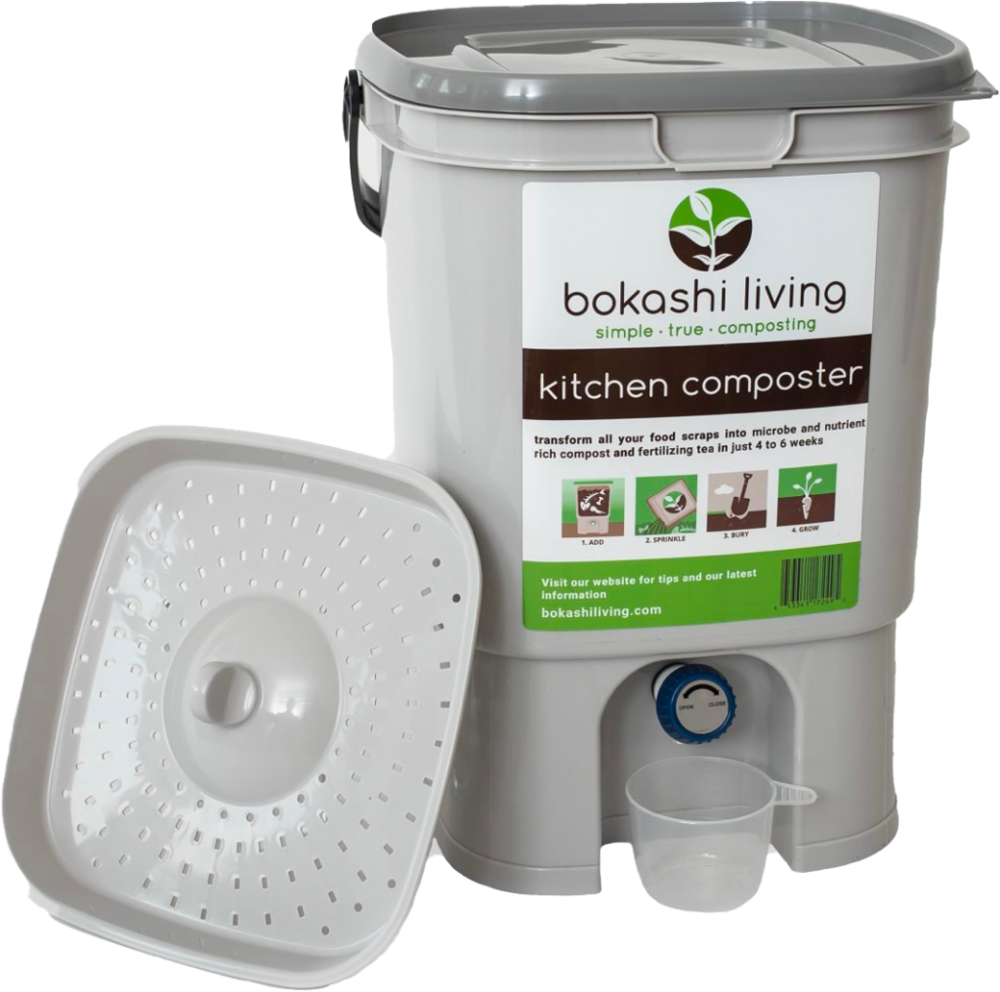

Biggest Advantage over other Composting Methods
Unlike traditional composting, in Bokashi composting, kitchen scraps of all kinds — including meat and dairy products banned from aerobic systems — are mixed with some of the inoculated bran, pressed into the Bokashi bucket, covered with another handful of bran, and tightly covered.
Main Ingredient
The Bokashi host medium can be almost any fine organic grain or grass-like substance — bran, rice, wheat mill run (WMR, a waste product from flour milling), used mushroom growth medium, dried leaves, or even sawdust. This medium is inoculated with beneficial microbes that flourish in anaerobic, acidic environments but smell less foul than do those in unfettered, natural anaerobic conditions.
Benefits
The resulting product makes for a highly nutritious plant food that can be buried in compost trenches in a garden. Also, the fermented material makes excellent food to add to a vermicomposting (worm composting) bin.
BOKASHI BIN
$ 28.99
BOKASHI BRAN
$ 52.99
BOKASHI KIT
$ 97.99